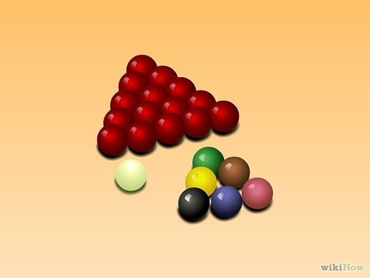
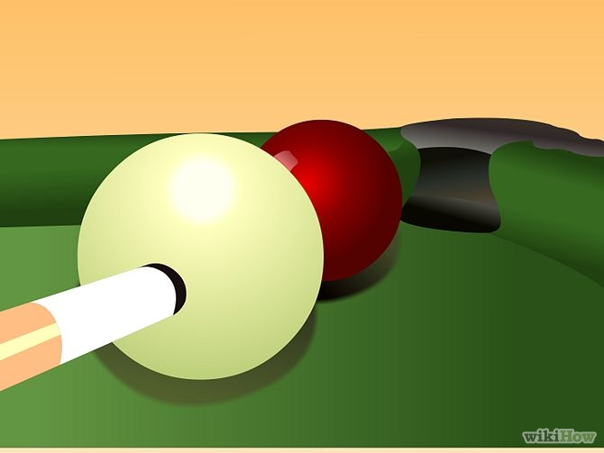
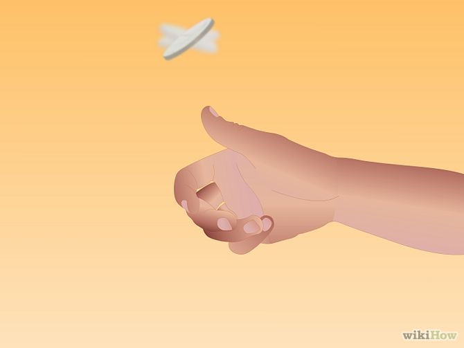
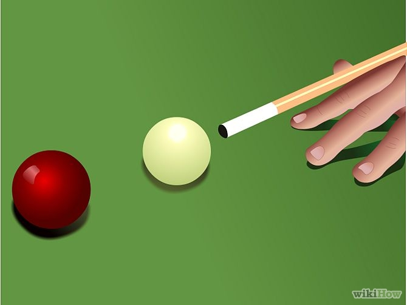
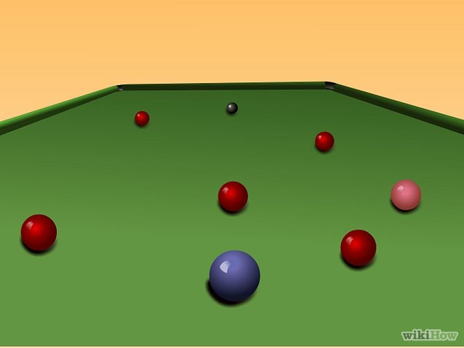
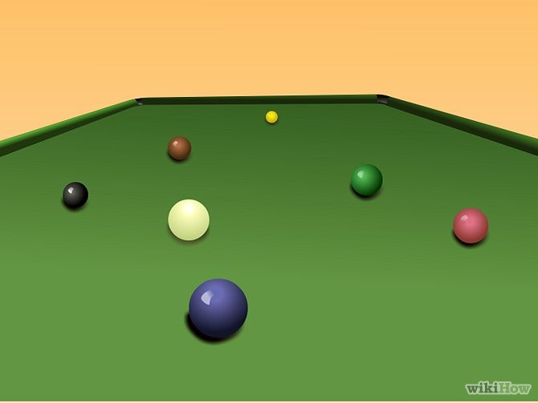
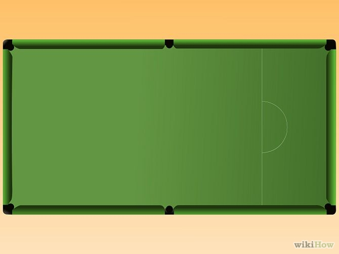
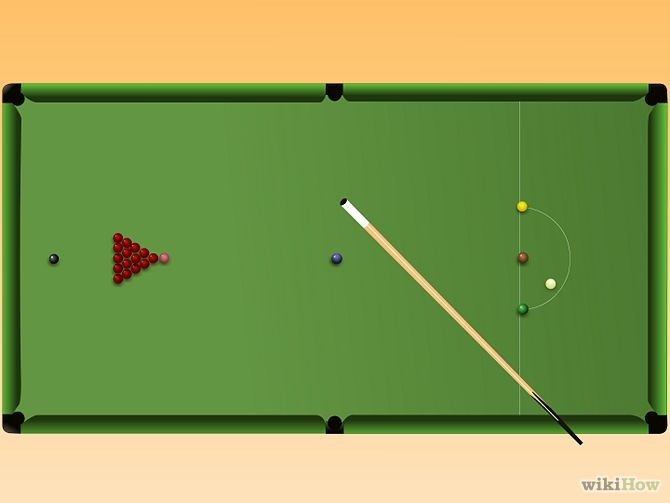

Snooker is one of the most popular billiards games in the world. Similar to pool, the snooker game takes place on a felt-covered table with 6 pockets, a cue stick and a set of balls. Here you can learn how to play snooker.

1
Obtain the proper equipment. Snooker is played with 22, unnumbered object balls, divided into two groups of 15 red balls, 6 balls of different colors and one white ball (the cue ball). Each ball has a different point value: red=1, yellow=2, green=3, brown=4, blue=5, pink=6, and black=7.

2
Understand that you're trying to score a higher number of points than your opponent by potting the balls, i.e. sinking the red and the colored balls alternately into the table pockets.

3
Toss a coin to decide who is to play first. The first player has to cause the cue ball to contact a red ball. If he fails to do this, the other player tries.

4
The first player to cause the cue ball to contact a red ball continues by potting or touching one of the colored balls and then a red ball in sequence until he fails. Then, the turn moves to the other player, who has to pot a red then a colored ball in sequence until he fails.

5
Continue in that manner as long as there are still red balls on the table. As long as there are red balls on the table, all the potted colored balls return to their original position on the table.

6
Put the lowest value to the highest value colored balls in sequence after the red balls run out. From then on, the colored balls are no longer put back in their original position.

7
The snooker game ends when there are no longer balls on the table. The winner is the player who had scored the highest number of points. Sometimes, the points difference between the players will be more than the points available on the table. During such cases, by mutual understanding between the players, the player with the lower number of points resigns from the game, thereby making the opponent as winner, even with balls left on the table.
